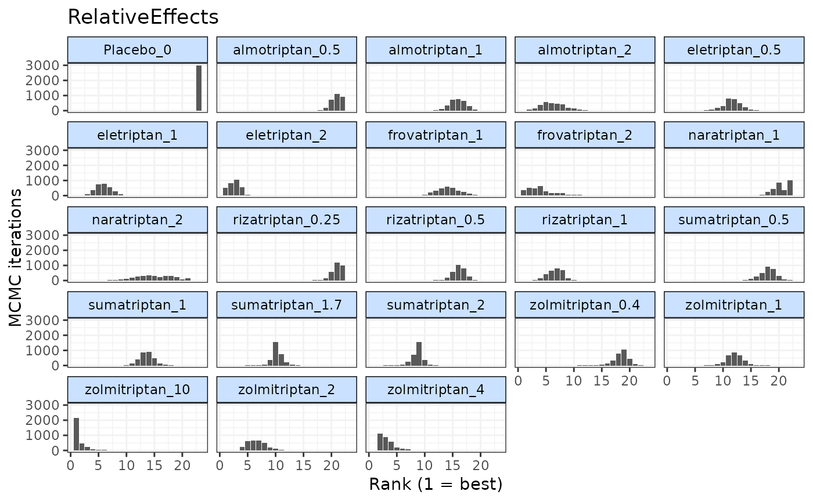

rank.relative.array.RdRanks "relative.table" objects generated by get.relative().
# S3 method for relative.array
rank(x, lower_better = TRUE, ...)An object on which to apply the rank method
Indicates whether negative responses are better (TRUE) or positive responses are better (FALSE)
Arguments to be passed to methods
An object of class("mbnma.rank") which is a list containing a summary data
frame, a matrix of rankings for each MCMC iteration, and a matrix of probabilities
that each agent has a particular rank, for each parameter that has been ranked.
# \donttest{
# Using the triptans data
network <- mbnma.network(triptans)
#> Values for `agent` with dose = 0 have been recoded to `Placebo`
#> agent is being recoded to enforce sequential numbering
# Rank selected predictions from an Emax dose-response MBNMA
emax <- mbnma.run(network, fun=demax(), method="random")
#> `likelihood` not given by user - set to `binomial` based on data provided
#> `link` not given by user - set to `logit` based on assigned value for `likelihood`
#> Compiling model graph
#> Resolving undeclared variables
#> Allocating nodes
#> Graph information:
#> Observed stochastic nodes: 182
#> Unobserved stochastic nodes: 197
#> Total graph size: 4115
#>
#> Initializing model
#>
rels <- get.relative(emax)
rank <- rank(rels, lower_better=TRUE)
# Print and generate summary data frame for `mbnma.rank` object
summary(rank)
#> $RelativeEffects
#> rank.param mean sd 2.5% 25% 50% 75% 97.5%
#> 1 Placebo_0 23.000000 0.0000000 23 23 23 23 23
#> 2 eletriptan_0.5 11.454333 1.6902269 8 11 11 12 15
#> 3 eletriptan_1 5.836333 1.5215074 3 5 6 7 9
#> 4 eletriptan_2 2.674667 1.0623250 1 2 3 3 5
#> 5 sumatriptan_0.5 18.130000 1.7068698 15 17 18 19 22
#> 6 sumatriptan_1 13.749000 1.4737898 11 13 14 15 17
#> 7 sumatriptan_1.7 10.343333 0.9192772 9 10 10 11 12
#> 8 sumatriptan_2 8.654333 1.0598218 6 8 9 9 10
#> 9 frovatriptan_1 14.201333 2.2538467 10 13 14 16 19
#> 10 frovatriptan_2 4.479667 2.7637172 1 2 4 6 11
#> 11 almotriptan_0.5 20.785333 1.0176427 19 20 21 22 22
#> 12 almotriptan_1 15.814667 1.4682314 13 15 16 17 19
#> 13 almotriptan_2 6.311000 2.2926035 2 5 6 8 11
#> 14 zolmitriptan_0.4 18.408000 1.5096232 15 18 19 19 21
#> 15 zolmitriptan_1 12.164667 1.5437009 9 11 12 13 15
#> 16 zolmitriptan_2 6.584000 1.6724861 4 5 6 8 10
#> 17 zolmitriptan_4 3.168333 1.3517666 2 2 3 4 7
#> 18 zolmitriptan_10 1.500333 1.0553220 1 1 1 2 5
#> 19 naratriptan_1 20.191667 1.5974295 17 19 20 22 22
#> 20 naratriptan_2 14.606667 3.5757821 7 12 15 17 21
#> 21 rizatriptan_0.25 21.085333 0.8677380 19 21 21 22 22
#> 22 rizatriptan_0.5 16.199000 1.1250871 14 15 16 17 18
#> 23 rizatriptan_1 6.658000 1.4652935 4 6 7 8 9
#>
print(rank)
#>
#> ================================
#> Ranking of dose-response MBNMA
#> ================================
#>
#> Includes ranking of relative effects
#>
#> 23 relefs ranked with negative responses being `worse`
#>
#> RelativeEffects ranking (from best to worst)
#>
#> |Treatment | Mean| Median| 2.5%| 97.5%|
#> |:----------------|-----:|------:|----:|-----:|
#> |zolmitriptan_10 | 1.50| 1| 1| 5|
#> |eletriptan_2 | 2.67| 3| 1| 5|
#> |zolmitriptan_4 | 3.17| 3| 2| 7|
#> |frovatriptan_2 | 4.48| 4| 1| 11|
#> |eletriptan_1 | 5.84| 6| 3| 9|
#> |almotriptan_2 | 6.31| 6| 2| 11|
#> |zolmitriptan_2 | 6.58| 6| 4| 10|
#> |rizatriptan_1 | 6.66| 7| 4| 9|
#> |sumatriptan_2 | 8.65| 9| 6| 10|
#> |sumatriptan_1.7 | 10.34| 10| 9| 12|
#> |eletriptan_0.5 | 11.45| 11| 8| 15|
#> |zolmitriptan_1 | 12.16| 12| 9| 15|
#> |sumatriptan_1 | 13.75| 14| 11| 17|
#> |frovatriptan_1 | 14.20| 14| 10| 19|
#> |naratriptan_2 | 14.61| 15| 7| 21|
#> |almotriptan_1 | 15.81| 16| 13| 19|
#> |rizatriptan_0.5 | 16.20| 16| 14| 18|
#> |sumatriptan_0.5 | 18.13| 18| 15| 22|
#> |zolmitriptan_0.4 | 18.41| 19| 15| 21|
#> |naratriptan_1 | 20.19| 20| 17| 22|
#> |almotriptan_0.5 | 20.79| 21| 19| 22|
#> |rizatriptan_0.25 | 21.09| 21| 19| 22|
#> |Placebo_0 | 23.00| 23| 23| 23|
#>
#>
# Plot `mbnma.rank` object
plot(rank)

# }